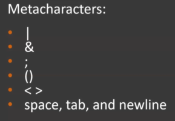
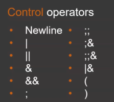
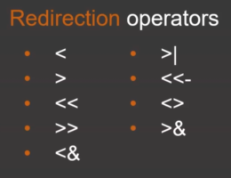
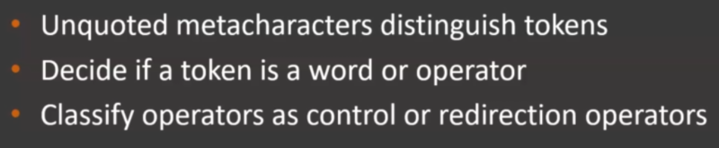

Step 1 in bash command processing is tokenisation.
Tokenisation is to divide command into individual parts known as tokens.
Tokens are divided according to metacharacters.

The tokens are then divided into words and operators.
Words are the tokens which doesn't contain any unquoted metacharacters.
Operators are the tokens which contain atleast 1 unquoted metachcaracter. Operators are of 2 type :
1. Control Operators manage the control flow of the script. They are crucial in tokensation as they determine how tokens are divided, where words end etc.

2. Redirection Operators provide help in redirection of commands to different streams.

In brief steps of tokenisation are :

Let's take example of following command :
echo $name > a.txt
First metacharacters are identified. In our example unqouted metacharacters are space and > .
After that tokens are divided into words and operators. Here words are echo, $name and a.txt and operator is > which is further classified as control or redirection operators.